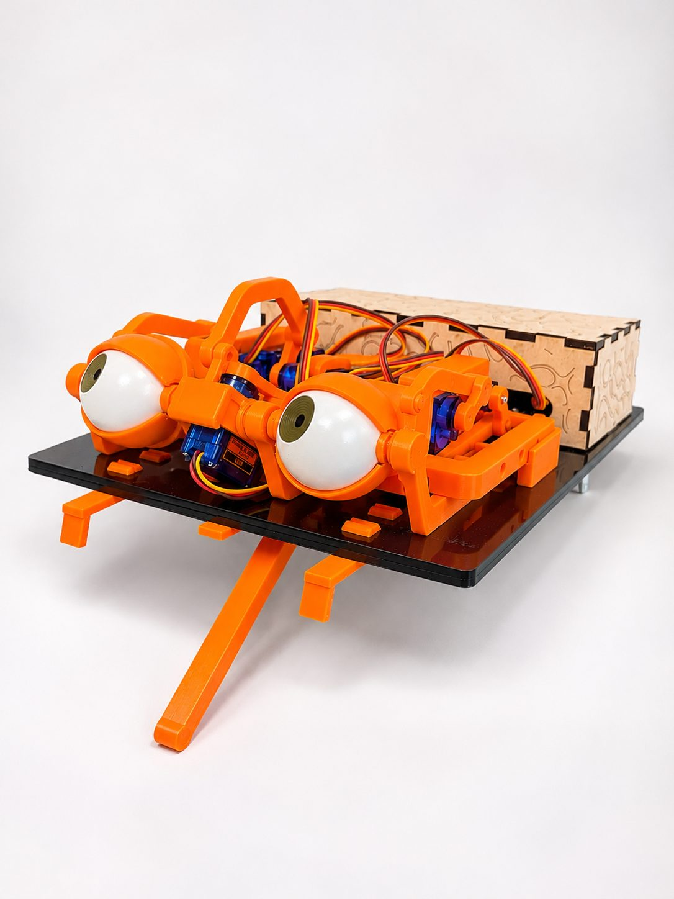
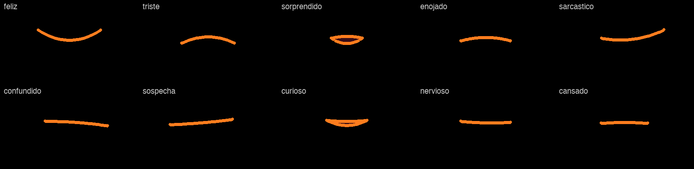
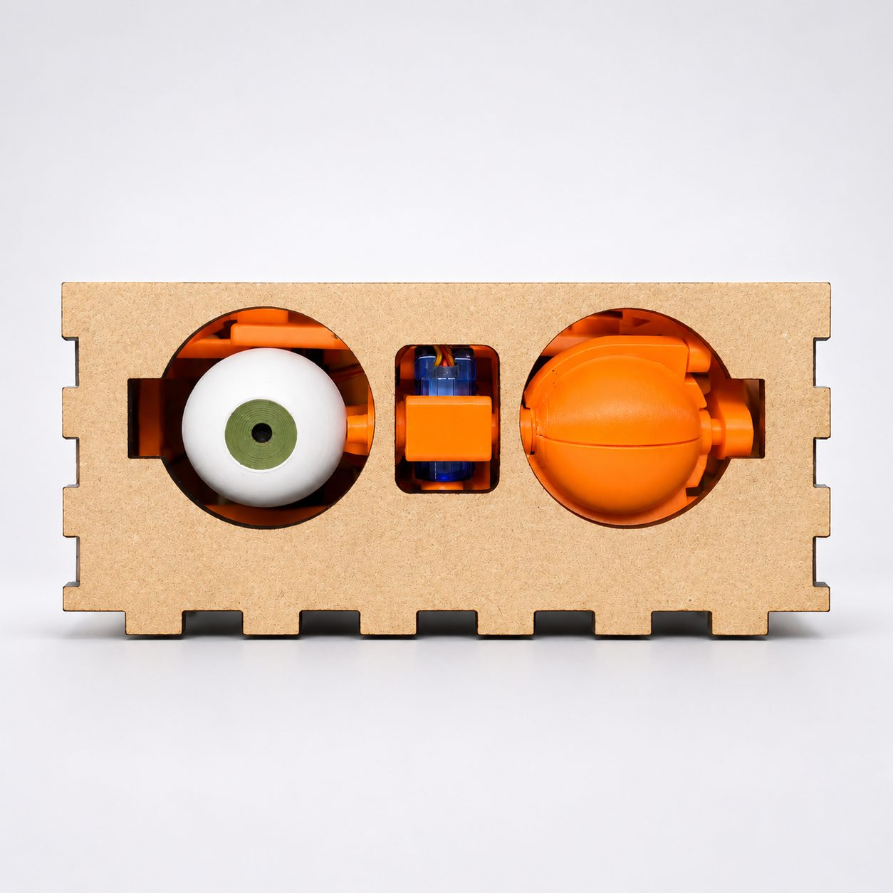
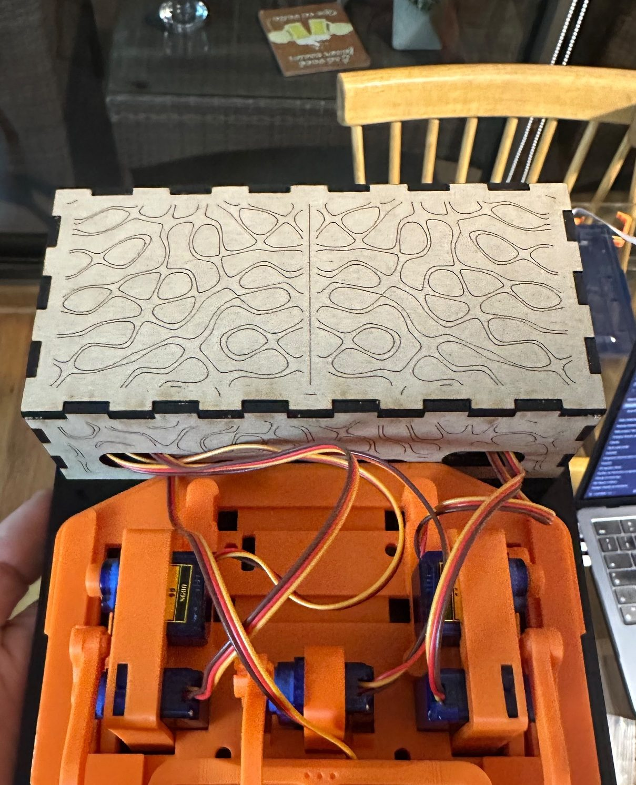
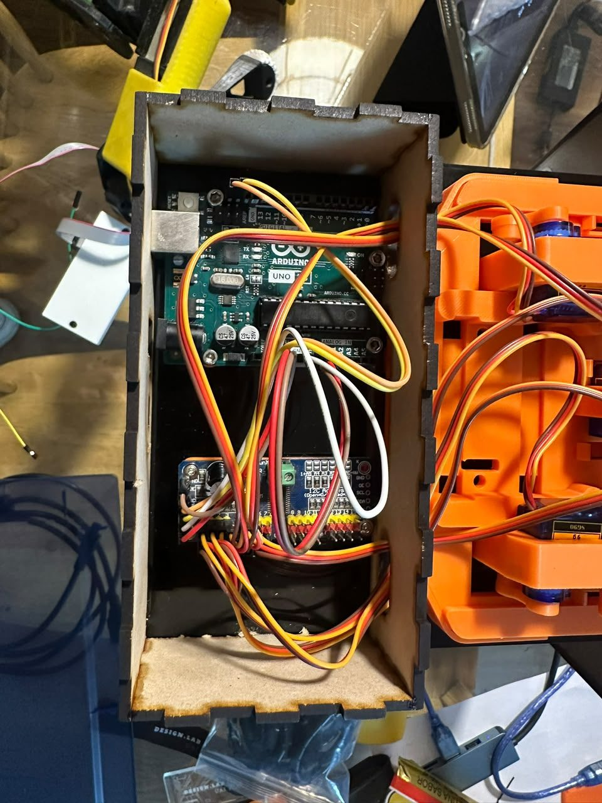
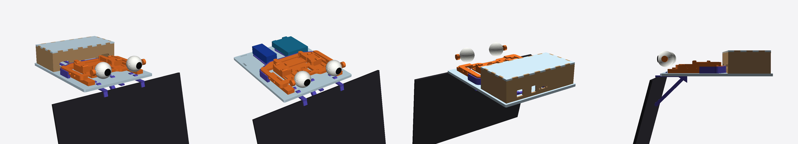
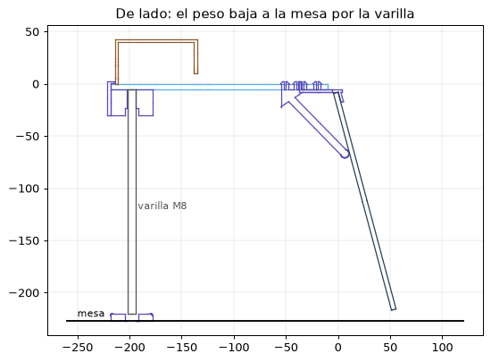
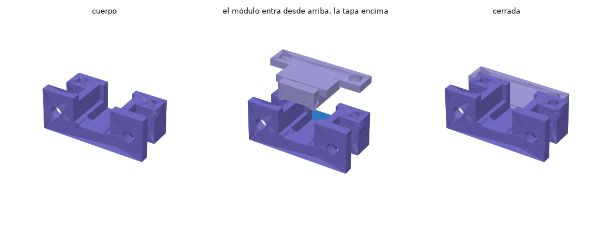

RobotFace
Claude físico y expresivo. Una interfaz sin pantalla de botones: mirada, gesto y voz para conversar con una IA.

Concepto
Unos ojos animatrónicos montados sobre la pantalla de un notebook que te miran, conversan contigo por voz con Claude y expresan emociones con los párpados. Diseñé la interacción completa: un ciclo de vida (duerme si no hay nadie, despierta al verte y te saluda), 16 expresiones sincronizadas con lo que dice, reconocimiento facial con consentimiento y la montura física en acrílico, MDF e impresión 3D, toda paramétrica.
Problema
Conversar con una IA es mirar una pantalla. ¿Qué pasa si la IA te mira de vuelta?
Video demostrativo
Interacción
Estados en vez de menús
Duerme, despierta, saluda, escucha, piensa y responde.
- Duerme a los 10 s sin ver a nadie: cierra los ojos y ronca en pantalla. El ruido no lo despierta, a propósito, para que no reaccione a cualquier sonido de la sala.
- Despierta solo al ver una cara: entreabre los ojos, parpadea, mira a la persona y la saluda, por su nombre si la reconoce.
Conversación natural
- Mira a quien habla: detecta caras y quién mueve la boca.
- Se calla si lo interrumpes (distingue tu voz del eco de la suya).
- Ignora voces del fondo si nadie frente a la cámara habla.
- Solo “piensa en voz alta” (“mmm, a ver…”) cuando le haces una pregunta.
- Personalidad: amigo chileno, sarcasmo cariñoso, respuestas cortas, honesto sobre ser una IA.
Expresión
Claude elige una emoción por frase ([feliz], [sarcastico]…). Los ojos la actúan justo al decirla y la boca de caricatura en pantalla cambia de forma y se mueve con el audio.
16 expresiones: sorpresa, sueño, enojo, sospecha, guiño, curioso, feliz, rodar los ojos, mirar alrededor, pensar, triste, parpadeo, confundido, nervioso, dormido y despertar.
Regla de diseño: los dos ojos parpadean siempre juntos. La asimetría queda solo para el guiño y los gestos que la necesitan; los parpadeos descoordinados se veían como una falla.

Ética
La cara es un dato biométrico. El robot pregunta por voz antes de recordarte, guarda la huella (128 números) solo en el computador y te olvida si le dices “olvídame”.
El escaneo guiado te pide 6 ángulos (frente, izquierda, derecha, barbilla arriba y abajo, frente) con un marco que barre la cara. Para reconocerte combina cara (70 %) y ropa (30 %): la ropa ayuda cuando la cara se ve de lado o lejos, pero una cara claramente distinta siempre gana.
Cómo funciona
Cámara ─► seguir.py (YuNet · MediaPipe · SFace) ─► USB serie ─► Arduino UNO ─► I2C ─► PCA9685 ─► 6 × SG90
▲ │ UDP (expresiones, quién habla, caras)
│ ▼
Micrófono ─► hablar.py (Whisper MLX · Claude · voz · boca) ◄──► API de Claude
│ UDP (forma de la boca)
▼
servidor.py ◄── página web + panel en vivo
Mecanismo
EyeMech ε3.2 de Will Cogley: 6 servos SG90 (4 para los párpados, 2 para la mirada X/Y) controlados por un Arduino UNO y una PCA9685. Calibrado servo por servo con fotos.
La mirada apunta a los ojos de la persona, no al centro de la cara: al principio miraba muy arriba.
Voz
Whisper en la GPU del Mac (MLX) → Claude Haiku (por velocidad y costo, con caché de prompt) → voz Paulina de macOS → boca animada que sigue el audio.
El objeto
Cuatro iteraciones de montura
- Cabeza completa tipo personaje. Descartada: tapaba demasiado y copiaba un personaje existente.
- Montura tipo cámara web con pinza articulada y carcasa. Descartada: la articulación no aguantaba el peso.
- Frente de MDF que tapaba el mecanismo. Cortado y probado, pero chocaba con los párpados al cerrar y con la pieza superior al mirar abajo.
- Mecanismo a la vista sobre una base de acrílico negro de 5 mm cortada a láser, con ganchos fijos a 15° en el borde de la pantalla, pata trasera siempre perpendicular a la pantalla y pata hasta la mesa con varilla M8, porque el peso le ganaba a la bisagra. La electrónica va en una caja de MDF de 3 mm con uniones dentadas y grabado de cerebro en todas las caras.
Todo es paramétrico en código (CadQuery): las piezas salen de scripts en Python a partir de medidas reales, que revisan choques contra la pantalla y entre piezas, y que se puedan imprimir sin soportes.










Herramientas
Hardware: Arduino UNO, PCA9685, servos SG90. Software: Python, OpenCV, MediaPipe, Whisper (MLX), API de Claude, pygame, HTML/CSS/JS. Fabricación: CadQuery, corte láser, impresión 3D (Bambu).
Archivos y código
Programas, sketches del Arduino, CAD paramétrico, STL, cortes láser y la página de entrega con ojos interactivos:
Ver repositorio en GitHub →Mecanismo EyeMech ε3.2 por Will Cogley. Las piezas de montura y la caja son diseño propio.